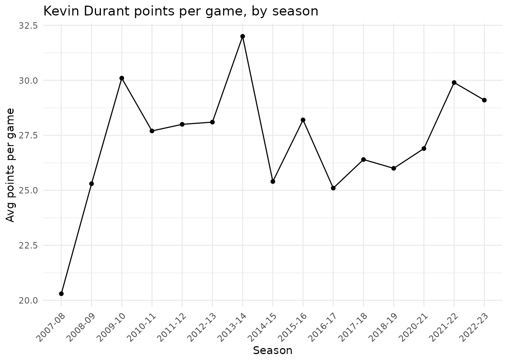

This example will follow the 2007 NBA draft where Greg Oden was the first pick and Kevin Durant was the second. This will explore the data, compare players to others drafted near them, and look at an individual player’s performance across seasons.
Data Exploration
nba_draft includes one row per drafted NBA player with
their career per-game statistics. (wnba_draft has the same
structure but will not be explored in this example.) Players who were
drafted but have no recorded games played have NA for their
statistics.
head(nba_draft)
#> player_name draft_year draft_number team_abbreviation college gp reb
#> 1 Pervis Ellison 1989 1 SAC Louisville 474 6.7
#> 2 Danny Ferry 1989 2 LAC Duke 917 2.8
#> 3 Sean Elliott 1989 3 SAS Arizona 742 4.3
#> 4 Glen Rice 1989 4 MIA Michigan 1000 4.4
#> 5 J.R. Reid 1989 5 CHH UNC 672 5.0
#> 6 Stacey King 1989 6 CHI Oklahoma 438 3.3
#> pts ast
#> 1 9.5 1.5
#> 2 7.0 1.3
#> 3 14.2 2.6
#> 4 18.3 2.1
#> 5 8.5 1.0
#> 6 6.4 0.9
dim(nba_draft)
#> [1] 1922 9
sum(is.na(nba_draft$pts)) # number of players who have no points recorded (i.e., drafted players who never played)
#> [1] 253
nba_draft[nba_draft$player_name %in% c("Greg Oden", "Kevin Durant"), ]
#> player_name draft_year draft_number team_abbreviation college gp reb
#> 1023 Greg Oden 2007 1 POR Ohio State 105 6.2
#> 1024 Kevin Durant 2007 2 SEA Texas 939 7.1
#> pts ast
#> 1023 8.0 0.5
#> 1024 27.2 4.3nba_players has one row per player per season, which is
helpful to track performance over time. Draft number will be
NA for players who were undrafted.
head(nba_players)
#> player_name team_abbreviation age player_height player_weight
#> 1 Randy Livingston HOU 22 193.04 94.80073
#> 2 Gaylon Nickerson WAS 28 190.50 86.18248
#> 3 George Lynch VAN 26 203.20 103.41898
#> 4 George McCloud LAL 30 203.20 102.05820
#> 5 George Zidek DEN 23 213.36 119.74829
#> 6 Gerald Wilkins ORL 33 198.12 102.05820
#> college country draft_year draft_round draft_number gp pts reb
#> 1 Louisiana State USA 1996 2 42 64 3.9 1.5
#> 2 Northwestern Oklahoma USA 1994 2 34 4 3.8 1.3
#> 3 North Carolina USA 1993 1 12 41 8.3 6.4
#> 4 Florida State USA 1989 1 7 64 10.2 2.8
#> 5 UCLA USA 1995 1 22 52 2.8 1.7
#> 6 Tennessee-Chattanooga USA 1985 2 47 80 10.6 2.2
#> ast net_rating oreb_pct dreb_pct usg_pct ts_pct ast_pct season
#> 1 2.4 0.3 0.042 0.071 0.169 0.487 0.248 1996-97
#> 2 0.3 8.9 0.030 0.111 0.174 0.497 0.043 1996-97
#> 3 1.9 -8.2 0.106 0.185 0.175 0.512 0.125 1996-97
#> 4 1.7 -2.7 0.027 0.111 0.206 0.527 0.125 1996-97
#> 5 0.3 -14.1 0.102 0.169 0.195 0.500 0.064 1996-97
#> 6 2.2 -5.8 0.031 0.064 0.203 0.503 0.143 1996-97
dim(nba_players)
#> [1] 12844 21
sum(is.na(nba_players$draft_number)) # note: this value will consider each season an undrafted player played in
#> [1] 2417
nba_players[nba_players$player_name == "Kevin Durant", ]
#> player_name team_abbreviation age player_height player_weight
#> 5209 Kevin Durant SEA 19 205.74 97.52228
#> 5423 Kevin Durant OKC 20 205.74 97.52228
#> 6184 Kevin Durant OKC 21 205.74 104.32616
#> 6291 Kevin Durant OKC 22 205.74 104.32616
#> 6787 Kevin Durant OKC 23 205.74 106.59412
#> 7560 Kevin Durant OKC 24 205.74 106.59412
#> 8014 Kevin Durant OKC 25 205.74 108.86208
#> 8525 Kevin Durant OKC 26 205.74 108.86208
#> 9015 Kevin Durant OKC 27 205.74 108.86208
#> 9140 Kevin Durant GSW 28 205.74 108.86208
#> 9629 Kevin Durant GSW 29 205.74 108.86208
#> 10506 Kevin Durant GSW 30 205.74 108.86208
#> 11569 Kevin Durant BKN 32 208.28 108.86208
#> 12190 Kevin Durant BKN 33 208.28 108.86208
#> 12664 Kevin Durant PHX 34 208.28 108.86208
#> college country draft_year draft_round draft_number gp pts reb ast
#> 5209 Texas USA 2007 1 2 80 20.3 4.4 2.4
#> 5423 Texas USA 2007 1 2 74 25.3 6.5 2.8
#> 6184 Texas USA 2007 1 2 82 30.1 7.6 2.8
#> 6291 Texas USA 2007 1 2 78 27.7 6.8 2.7
#> 6787 Texas USA 2007 1 2 66 28.0 8.0 3.5
#> 7560 Texas USA 2007 1 2 81 28.1 7.9 4.6
#> 8014 Texas USA 2007 1 2 81 32.0 7.4 5.5
#> 8525 Texas USA 2007 1 2 27 25.4 6.6 4.1
#> 9015 Texas USA 2007 1 2 72 28.2 8.2 5.0
#> 9140 Texas USA 2007 1 2 62 25.1 8.3 4.8
#> 9629 Texas USA 2007 1 2 68 26.4 6.8 5.4
#> 10506 Texas USA 2007 1 2 78 26.0 6.4 5.9
#> 11569 Texas-Austin USA 2007 1 2 35 26.9 7.1 5.6
#> 12190 Texas-Austin USA 2007 1 2 55 29.9 7.4 6.4
#> 12664 Texas USA 2007 1 2 47 29.1 6.7 5.0
#> net_rating oreb_pct dreb_pct usg_pct ts_pct ast_pct season
#> 5209 -11.7 0.027 0.111 0.278 0.519 0.120 2007-08
#> 5423 -9.5 0.030 0.166 0.282 0.577 0.135 2008-09
#> 6184 7.0 0.038 0.177 0.317 0.607 0.130 2009-10
#> 6291 4.7 0.023 0.174 0.302 0.589 0.127 2010-11
#> 6787 7.7 0.019 0.200 0.308 0.610 0.170 2011-12
#> 7560 12.7 0.018 0.201 0.298 0.647 0.213 2012-13
#> 8014 8.0 0.022 0.184 0.327 0.635 0.259 2013-14
#> 8525 7.2 0.020 0.181 0.285 0.633 0.213 2014-15
#> 9015 11.2 0.021 0.209 0.305 0.634 0.230 2015-16
#> 9140 16.0 0.023 0.232 0.276 0.651 0.218 2016-17
#> 9629 7.0 0.015 0.169 0.293 0.640 0.243 2017-18
#> 10506 11.4 0.013 0.153 0.283 0.631 0.251 2018-19
#> 11569 10.7 0.012 0.180 0.303 0.666 0.252 2020-21
#> 12190 6.5 0.015 0.166 0.310 0.634 0.274 2021-22
#> 12664 6.8 0.012 0.166 0.305 0.677 0.228 2022-23
nba_players[nba_players$player_name == "Greg Oden", ]
#> player_name team_abbreviation age player_height player_weight college
#> 5479 Greg Oden POR 21 213.36 129.2737 Ohio State
#> 6008 Greg Oden POR 22 213.36 129.2737 Ohio State
#> 7631 Greg Oden MIA 26 213.36 123.8306 Ohio State
#> country draft_year draft_round draft_number gp pts reb ast net_rating
#> 5479 USA 2007 1 1 61 8.9 7.0 0.5 7.6
#> 6008 USA 2007 1 1 21 11.1 8.5 0.9 8.9
#> 7631 USA 2007 1 1 23 2.9 2.3 0.0 -7.5
#> oreb_pct dreb_pct usg_pct ts_pct ast_pct season
#> 5479 0.155 0.252 0.191 0.599 0.038 2008-09
#> 6008 0.161 0.267 0.209 0.647 0.066 2009-10
#> 7631 0.126 0.177 0.154 0.567 0.007 2013-14How did the top draft picks overall perform?
draft_rank_stats() is used to calculate the average and
median values of a given measure for all players drafted within a range
of picks. draft_rank_comps() then compares those values
between two different draft ranges. Here, we will look at points and
rebounds per game for the top five picks and compare them with picks six
through ten.
draft_rank_stats(nba_draft, 1, 5, "pts")
#> Num_Players Measure Avg Median
#> 1 165 pts 14.27697 14.2
draft_rank_stats(nba_draft, 1, 5, "reb")
#> Num_Players Measure Avg Median
#> 1 165 reb 5.637576 5.1
draft_rank_comps(nba_draft, 1, 5, 6, 10, "pts")
#> Range Measure Avg Median Diff_Avg Diff_Median
#> 1 1-5 pts 14.27697 14.2 3.937576 4.8
#> 2 6-10 pts 10.33939 9.4 3.937576 4.8
draft_rank_comps(nba_draft, 1, 5, 6, 10, "reb")
#> Range Measure Avg Median Diff_Avg Diff_Median
#> 1 1-5 reb 5.637576 5.1 1.327273 1
#> 2 6-10 reb 4.310303 4.1 1.327273 1Picks 1-5 had 3.9 more points and 1.3 more rebounds on average than picks 6-10.
Comparing Oden and Durant to those drafted in similar positions
player_picks_comps() compares a player’s average on a
given measure to the average and median of those drafted within a window
of picks around them, across every draft in the dataset. We will compare
Oden and Durant’s points and rebounds per game to players picked within
three spots of them.
player_picks_comps(nba_draft, "Greg Oden", "pts", 3)
#> Player Range Measure Player_stat Avg Median Diff_Avg Diff_Median
#> 1 Greg Oden 1-4 pts 8 14.7197 14.65 -6.719697 -6.65
player_picks_comps(nba_draft, "Greg Oden", "reb", 3)
#> Player Range Measure Player_stat Avg Median Diff_Avg Diff_Median
#> 1 Greg Oden 1-4 reb 6.2 5.880303 5.55 0.319697 0.65
player_picks_comps(nba_draft, "Kevin Durant", "pts", 3)
#> Player Range Measure Player_stat Avg Median Diff_Avg Diff_Median
#> 1 Kevin Durant 1-5 pts 27.2 14.27697 14.2 12.92303 13
player_picks_comps(nba_draft, "Kevin Durant", "reb", 3)
#> Player Range Measure Player_stat Avg Median Diff_Avg Diff_Median
#> 1 Kevin Durant 1-5 reb 7.1 5.637576 5.1 1.462424 2Oden scored 6.7 points below the average of players picked in spots 1-4, but his rebounding was right around the average. Durant scored 13 points above the average of players picked in spots 1-5, and had about 1.5 more rebounds.
Durant’s trajectory across seasons
player_year_comps() compares a player between two
seasons. In the following example, we will follow Kevin Durant from his
rookie season (2007-08) through 2022-23, his 16th active season. Note,
there is no data from the 2019-20 season as Durant was recovering from
an Achilles injury.
seasons <- nba_players$season[nba_players$player_name == "Kevin Durant"]
seasons <- seasons[-1]
durant <- data.frame()
for (s in seasons) {
stats <- player_year_comps(nba_players, "Kevin Durant", "2007-08", s, "pts")
durant <- rbind(durant, stats)
}
durant$Season <- seasons
durant
#> Player Draft_Year Seasons Measure Season1_value
#> 1 Kevin Durant 2007 2007-08 vs. 2008-09 pts 20.3
#> 2 Kevin Durant 2007 2007-08 vs. 2009-10 pts 20.3
#> 3 Kevin Durant 2007 2007-08 vs. 2010-11 pts 20.3
#> 4 Kevin Durant 2007 2007-08 vs. 2011-12 pts 20.3
#> 5 Kevin Durant 2007 2007-08 vs. 2012-13 pts 20.3
#> 6 Kevin Durant 2007 2007-08 vs. 2013-14 pts 20.3
#> 7 Kevin Durant 2007 2007-08 vs. 2014-15 pts 20.3
#> 8 Kevin Durant 2007 2007-08 vs. 2015-16 pts 20.3
#> 9 Kevin Durant 2007 2007-08 vs. 2016-17 pts 20.3
#> 10 Kevin Durant 2007 2007-08 vs. 2017-18 pts 20.3
#> 11 Kevin Durant 2007 2007-08 vs. 2018-19 pts 20.3
#> 12 Kevin Durant 2007 2007-08 vs. 2020-21 pts 20.3
#> 13 Kevin Durant 2007 2007-08 vs. 2021-22 pts 20.3
#> 14 Kevin Durant 2007 2007-08 vs. 2022-23 pts 20.3
#> Season2_value Difference Season
#> 1 25.3 5.0 2008-09
#> 2 30.1 9.8 2009-10
#> 3 27.7 7.4 2010-11
#> 4 28.0 7.7 2011-12
#> 5 28.1 7.8 2012-13
#> 6 32.0 11.7 2013-14
#> 7 25.4 5.1 2014-15
#> 8 28.2 7.9 2015-16
#> 9 25.1 4.8 2016-17
#> 10 26.4 6.1 2017-18
#> 11 26.0 5.7 2018-19
#> 12 26.9 6.6 2020-21
#> 13 29.9 9.6 2021-22
#> 14 29.1 8.8 2022-23Throughout every season, Durant performed better in terms of points scored than his rookie season. His highest average points per season was in the 2013-14 season, with 32 points per game.
library(ggplot2)
rookie_season <- data.frame(Season = "2007-08", Season2_value = durant$Season1_value[1])
durant <- rbind(rookie_season, durant[, c("Season", "Season2_value")])
ggplot(durant, aes(x=Season, y=Season2_value, group =1))+
geom_line()+
geom_point()+
labs(title = "Kevin Durant points per game, by season",
x = "Season",
y= "Avg points per game")+
theme_minimal()+
theme(axis.text.x = element_text(angle = 45, hjust =1))